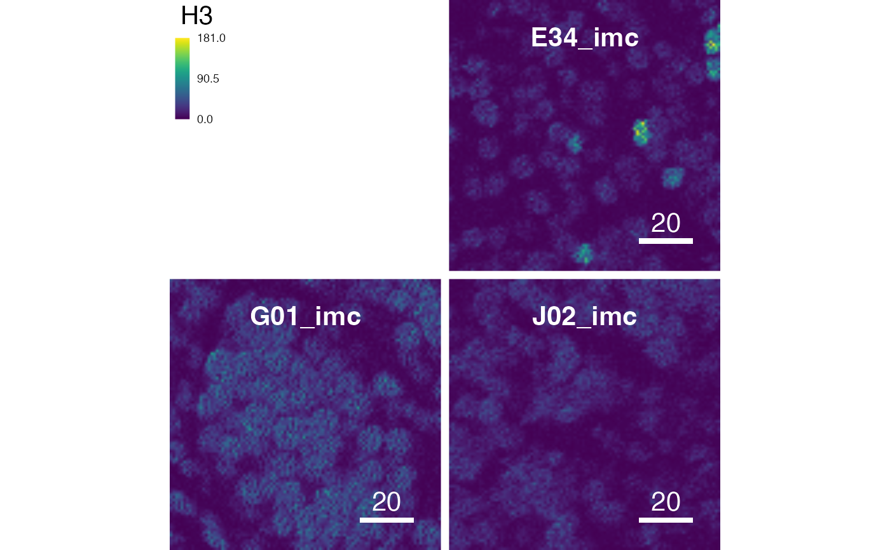
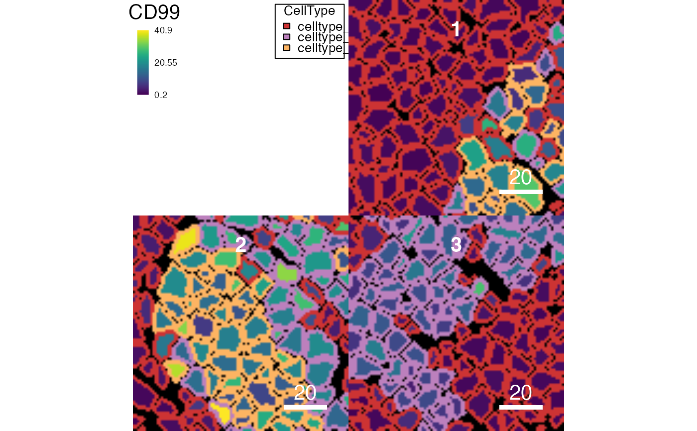

The plotCells and plotPixels functions share a
number of parameter that can be set to change the visual representation of
plotted images.
Arguments
| missing_colour | a single character specifying a valid colour. Cells
that are not contained in the SingleCellExperiment object will be coloured
based on |
|---|---|
| background_colour | (only |
| scale_bar | a list specifying features of the scale bar. One or multiple of the following entries are supported:
Plotting of the scale bar is suppressed if set to |
| image_title | a list specifying features of the image titles. One or multiple of the following entries are supported:
Plotting of the image title is suppressed if set to |
| save_plot | a list specifying how to save the plot. One or multiple of the following entries are supported:
|
| return_plot | logical indicating whether to return the plot (see
|
| return_images | logical indicating whether to return the coloured images
in form of a |
| legend | a list specifying features of the legend. One or multiple of the following entries are supported:
Plotting of the legend is suppressed if set to |
| margin | numeric value indicating the gap (in pixels) between individual images (default 0). |
| thick | logical indicating whether cell borders should be drawn as
thick lines (default |
| display | one of two possible values: "all" or "single". When set to "all", all images are displayed at once in a grid-like fashion. When set to "single", individual images are plotted in single graphics devices. The second option is useful when saving individual images in pdf format or when displaying in Rmarkdown files. |
| scale | logical indicating whether to scale each feature individually to
its minimum/maximum across the SingleCellExperiment object (see
|
| interpolate | a logical indicating whether to apply
linear interpolation to the image when drawing (see
|
Value
a list if return_images and/or return_plot is TRUE.
plot: a single plot object (display = "all") or a list of plot objects (display = "single")images: aSimpleListobject containing three-colourImageobjects.
See also
plotCells and plotPixels
for the main plotting functions
Author
Nils Eling (nils.eling@dqbm.uzh.ch)
Nicolas Damond (nicolas.damond@dqbm.uzh.ch)
Examples
data("pancreasImages") data("pancreasMasks") data("pancreasSCE") # Setting missing colour plotCells(pancreasMasks, missing_colour = "blue")# Setting the scale bar plotCells(pancreasMasks, scale_bar = list(length = 10, cex = 2, lwidth = 10, colour = "red", position = "bottomleft", margin = c(5,5), frame = 3))# Setting the image title plotCells(pancreasMasks, image_title = list(text = c("image1", "image2", "image3"), position = "topleft", colour = "blue", margin = c(0,5), font = 2, cex = 2))cur_out$plot#> List of length 3 #> names(3): E34_imc G01_imc J02_imc# Setting the legend plotCells(pancreasMasks, object = pancreasSCE, img_id = "ImageNb", cell_id = "CellNb", colour_by = c("CD99", "CDH"), outline_by = "CellType", legend = list(colour_by.title.font = 0.5, colour_by.title.cex = 0.5, colour_by.labels.cex = 0.5, outline_by.legend.cex = 0.5, margin = 0))# Thick outlines plotCells(pancreasMasks, object = pancreasSCE, img_id = "ImageNb", cell_id = "CellNb", colour_by = "CD99", outline_by = "CellType", thick = TRUE)# Suppress interpolation plotPixels(pancreasImages, colour_by = c("CD99", "PIN"), interpolate = TRUE)